1. Что это, зачем, где найти
Временная таблица
Что это. Результат запроса, который не возвращается в код, а сохраняется под именем — чтобы следующий запрос мог взять из него данные, как из обычной таблицы базы.
Аналогия: решаешь сложную задачу и записываешь промежуточный результат на листок, чтобы дальше считать от него, а не начинать заново.
Пакетный запрос
Что это. Несколько запросов в одном тексте, разделённых точкой с запятой ;. Платформа выполняет их по очереди, сверху вниз. Обычно первые запросы складывают данные во временные таблицы, а последний берёт из них итог.
Зачем
| Проблема | Как помогают временные таблицы |
|---|---|
| Запрос огромный, с кучей соединений — в нём трудно разобраться | Разбиваешь на шаги: каждый запрос делает одно дело |
| Одни и те же данные нужны в нескольких местах запроса | Считаешь один раз, кладёшь в ВТ, используешь сколько угодно |
| Соединение больших таблиц работает медленно | Сначала отбираешь нужное в маленькую ВТ с индексом, потом соединяешь |
| Нужно сгруппировать результат объединения | Объединение кладёшь в ВТ, потом группируешь её |
Где встречается. Почти все запросы в типовых конфигурациях — ЗУП, ERP, Бухгалтерия — это пакеты с временными таблицами. Открываешь любой отчёт или проведение документа — видишь ПОМЕСТИТЬ ВТ.... Читать такие запросы — обязательный навык.
2. Как пишется
Пакет из двух запросов
Этот пример показывает только синтаксис — на практике так не пишут: второй запрос просто повторяет первый. В реальной работе второй запрос всегда что-то добавляет к временной таблице — соединяет с другой таблицей, группирует или отбирает. Осмысленный пример — в разделе 7.
ВЫБРАТЬ
Товары.Ссылка КАК Ссылка,
Товары.Цена КАК Цена
ПОМЕСТИТЬ ВТТовары
ИЗ
Справочник.Товары КАК Товары
ГДЕ
НЕ Товары.ПометкаУдаления
ИНДЕКСИРОВАТЬ ПО
Ссылка
;
////////////////////////////////////////////////////////////////////////////////
ВЫБРАТЬ
ВТТовары.Ссылка КАК Товар,
ВТТовары.Цена КАК Цена
ИЗ
ВТТовары КАК ВТТовары
| Что | Где стоит | Что значит |
|---|---|---|
ПОМЕСТИТЬ ВТТовары |
После полей, перед ИЗ |
Результат этого запроса сохранить во временную таблицу ВТТовары |
ИНДЕКСИРОВАТЬ ПО Ссылка |
В конце запроса | Построить индекс по полю — раздел 5 |
; |
После запроса | Конец запроса, дальше — следующий запрос пакета |
///// |
Между запросами | Просто комментарий-разделитель. Конструктор ставит его для читаемости |
ИЗ ВТТовары |
Во втором запросе | Временная таблица используется как обычная таблица |
Правила
- Имя временной таблицы — любое, но по соглашению начинается с
ВТ:ВТТовары,ВТОстатки. Сразу видно, что таблица временная. - Временная таблица видна только запросам ниже неё в том же пакете.
- Создать таблицу с одним именем дважды нельзя — будет ошибка «Таблица уже существует».
- Поля временной таблицы — это псевдонимы из
ВЫБРАТЬеё запроса. Поэтому всегда пишиКАК.
3. Как выполнить пакет из кода
Выполнить — результат последнего запроса
Запрос = Новый Запрос;
Запрос.Текст = "..."; // пакет из двух запросов
Результат = Запрос.Выполнить();
Выборка = Результат.Выбрать();
Выполнить() выполняет все запросы пакета, но возвращает результат только последнего. Обычно этого и достаточно: первые запросы готовят временные таблицы, последний даёт итог.
ВыполнитьПакет — результаты всех запросов
Результаты = Запрос.ВыполнитьПакет();
// Результаты — массив, по одному элементу на каждый запрос
ИтогЗапроса = Результаты[1]; // индексы с нуля: [0] — первый запрос, [1] — второй
Выборка = ИтогЗапроса.Выбрать();
| Что в массиве | Что там лежит |
|---|---|
Результат запроса с ПОМЕСТИТЬ |
Одна строка с полем Количество — сколько строк попало в ВТ |
| Результат обычного запроса | Обычный результат: Выбрать(), Выгрузить() |
Когда нужен: когда в коде нужны результаты нескольких запросов пакета сразу — например, шапка и строки печатной формы одним пакетом.
4. Менеджер временных таблиц
Зачем нужен менеджер ВТ и как он работает
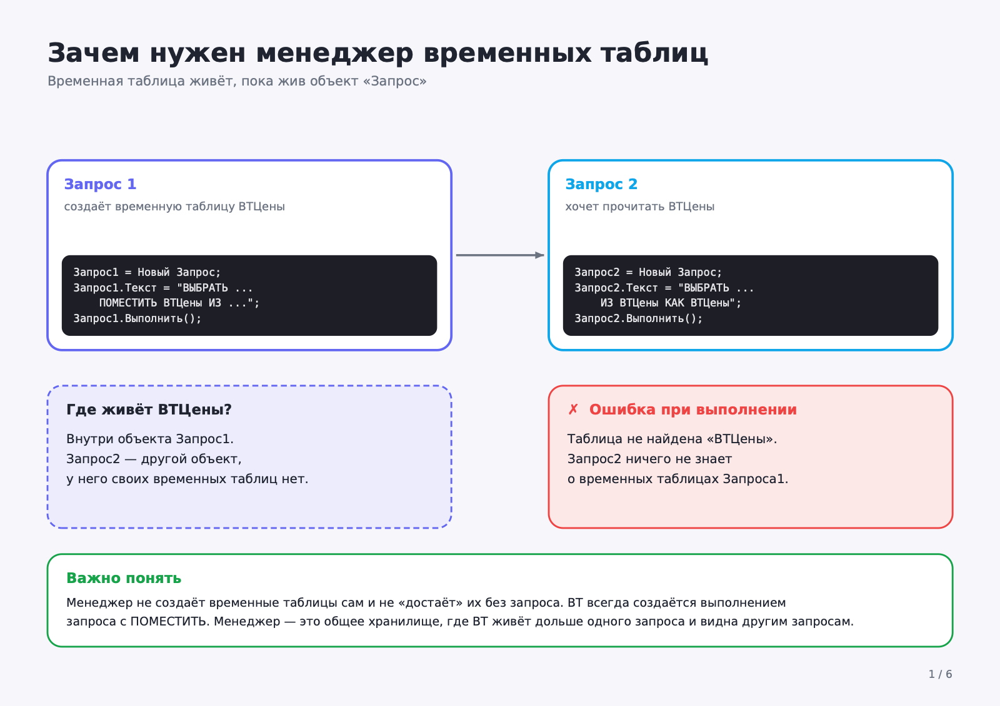
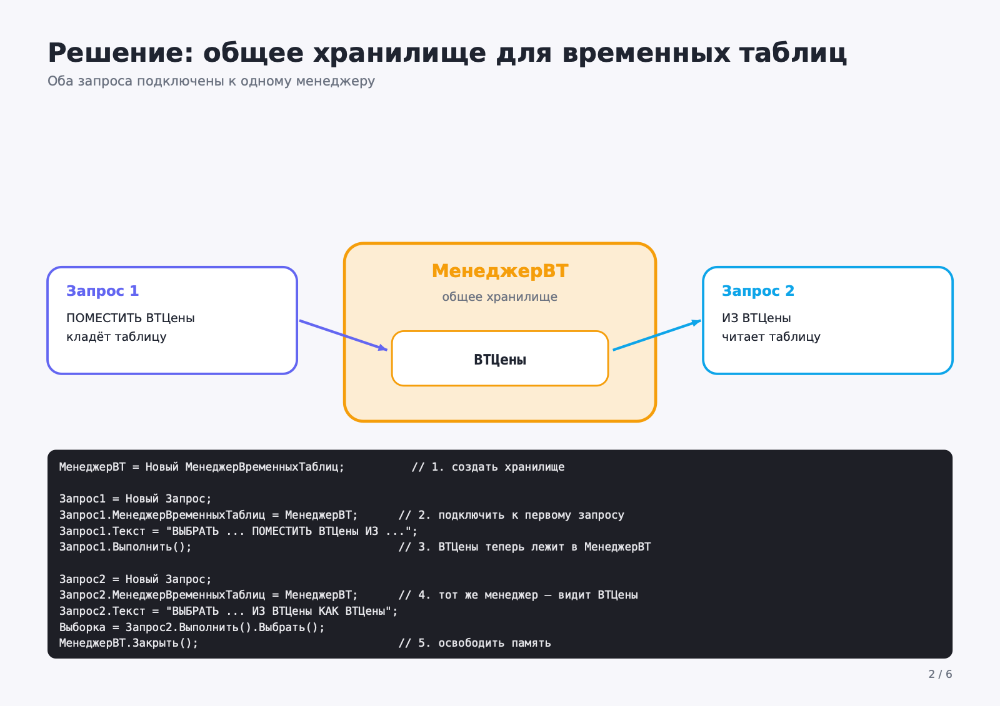
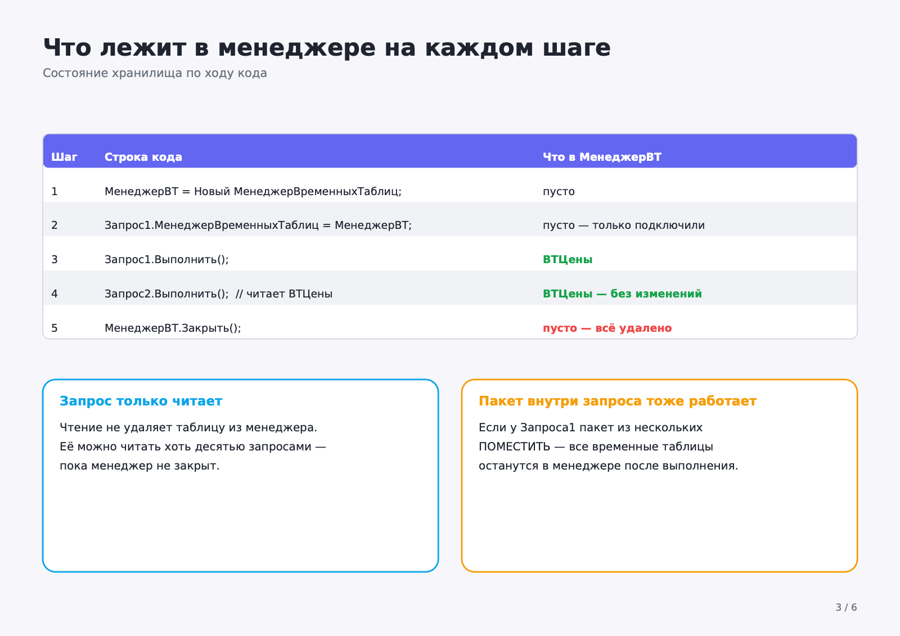
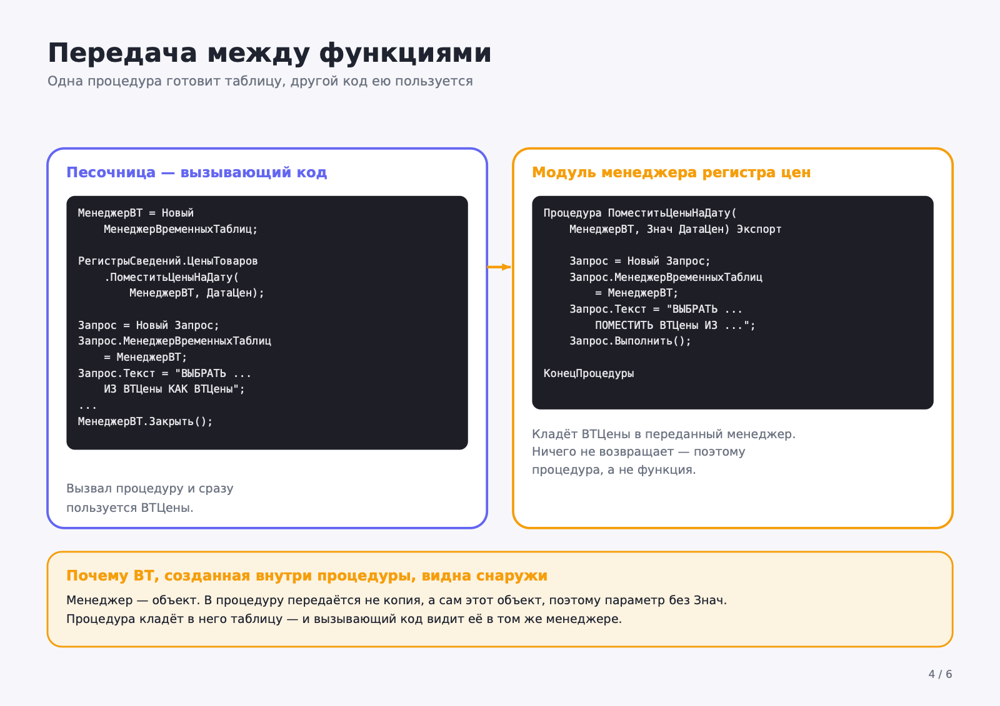
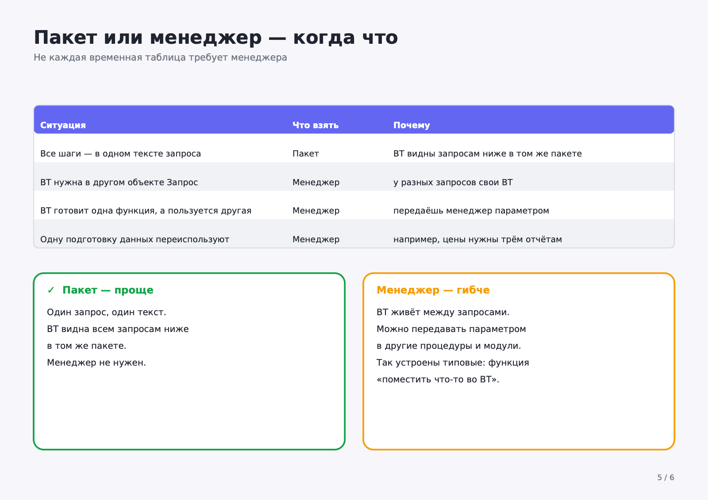
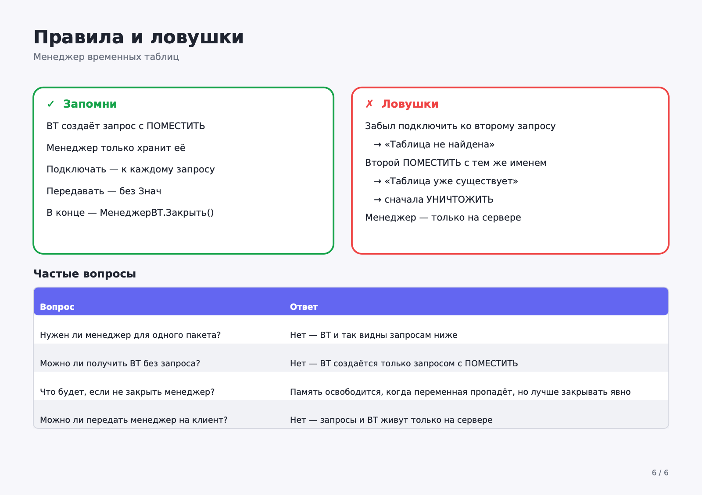
Проблема
Временная таблица живёт, пока жив объект запроса. Выполнил запрос — таблица исчезла. Создал новый Запрос — старых таблиц он не видит.
Решение
Менеджер временных таблиц — контейнер, где ВТ хранятся между запросами. Один менеджер можно отдать нескольким запросам — и все они будут видеть одни и те же временные таблицы.
МенеджерВТ = Новый МенеджерВременныхТаблиц;
// Первый запрос — создаёт ВТ
Запрос1 = Новый Запрос;
Запрос1.МенеджерВременныхТаблиц = МенеджерВТ;
Запрос1.Текст = "ВЫБРАТЬ ... ПОМЕСТИТЬ ВТТовары ИЗ ...";
Запрос1.Выполнить();
// Второй запрос — в другом месте кода, читает ту же ВТ
Запрос2 = Новый Запрос;
Запрос2.МенеджерВременныхТаблиц = МенеджерВТ;
Запрос2.Текст = "ВЫБРАТЬ ... ИЗ ВТТовары КАК ВТТовары";
Выборка = Запрос2.Выполнить().Выбрать();
МенеджерВТ.Закрыть(); // освободить память
Где встречается. В типовых конфигурациях одна функция готовит временную таблицу, например с ценами, кладёт её в менеджер, а вызывающий код пишет свой запрос, который этой таблицей пользуется. Так одну подготовку данных переиспользуют в разных местах.
Уничтожить временную таблицу
УНИЧТОЖИТЬ ВТТовары
Отдельный запрос пакета. Удаляет таблицу и освобождает память. Нужен, когда менеджер живёт долго и временные таблицы больше не нужны, или когда хочешь создать таблицу с тем же именем заново.
5. Индекс
Что это. Как алфавитный указатель в книге: по нему база находит нужные строки сразу, а не перебирает все.
Когда нужен. Когда временную таблицу потом соединяешь по какому-то полю или отбираешь по нему. Индексируй именно это поле — обычно ссылку: товар, документ, сотрудника.
Когда не нужен. Если в ВТ десяток строк — выигрыша не будет. На учебной базе разницы не заметишь, а на рабочей с тысячами строк — заметишь.
Уникальный индекс — если значения в поле точно не повторяются, например по одному товару на строку. Ставится галочкой на вкладке «Индекс».
6. В конструкторе
Шаг 1. Первый запрос — создание временной таблицы
Собери запрос как обычно: из справочников перенеси Товары в среднюю колонку, поля Ссылка и Цена — в правую. Потом вкладка «Дополнительно»:
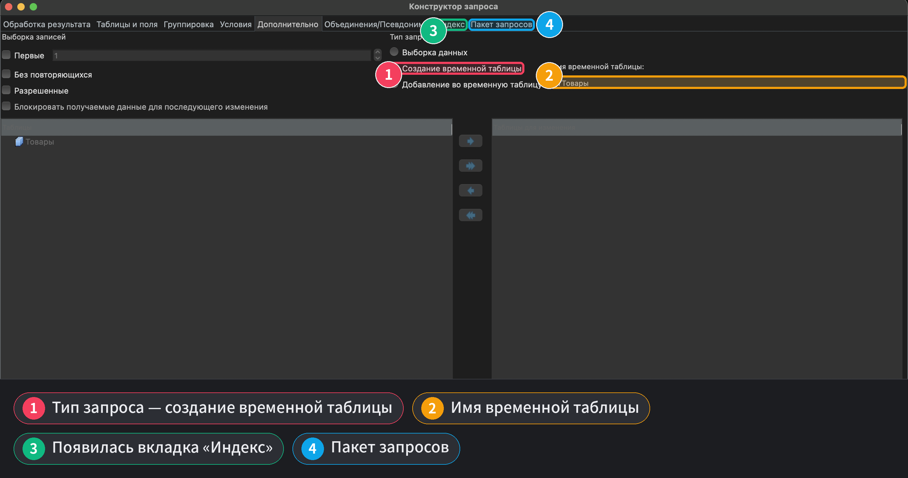
| № | Что сделать |
|---|---|
| 1 | Тип запроса — «Создание временной таблицы» |
| 2 | Имя временной таблицы — ВТТовары |
| 3 | Появилась вкладка «Индекс» — она есть только у запросов, создающих ВТ |
| 4 | Вкладка «Пакет запросов» — следующий шаг |
Шаг 2. Индекс
Вкладка «Индекс». Перенеси Ссылка вправо:
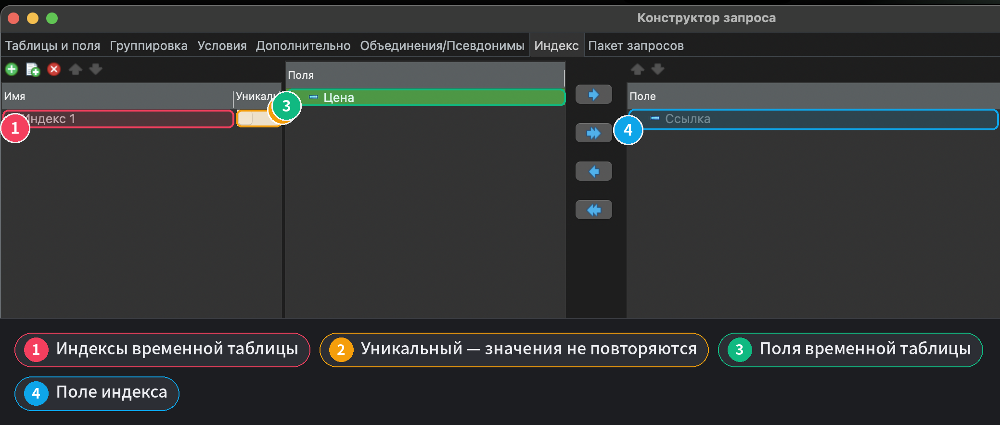
| № | Что это |
|---|---|
| 1 | Индексы временной таблицы. Обычно одного достаточно |
| 2 | Галочка «Уникальный» — если значения поля не повторяются |
| 3 | Поля временной таблицы, которые можно индексировать |
| 4 | Поле, по которому построен индекс |
Шаг 3. Пакет запросов
Вкладка «Пакет запросов» → «Добавить»:
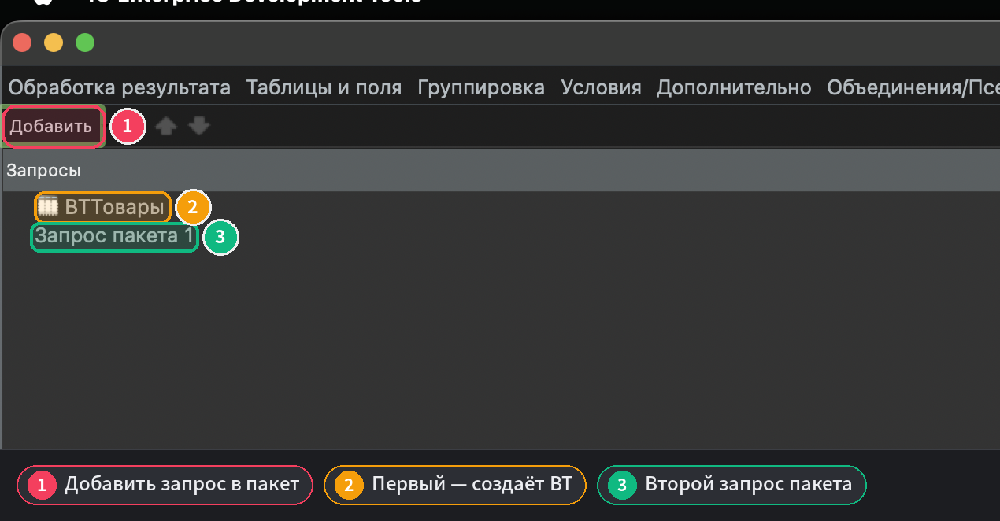
| № | Что это |
|---|---|
| 1 | Добавить запрос в пакет |
| 2 | Первый запрос — назван по имени временной таблицы |
| 3 | Второй запрос пакета |
У кнопки «Добавить» есть меню — стрелка рядом с ней:
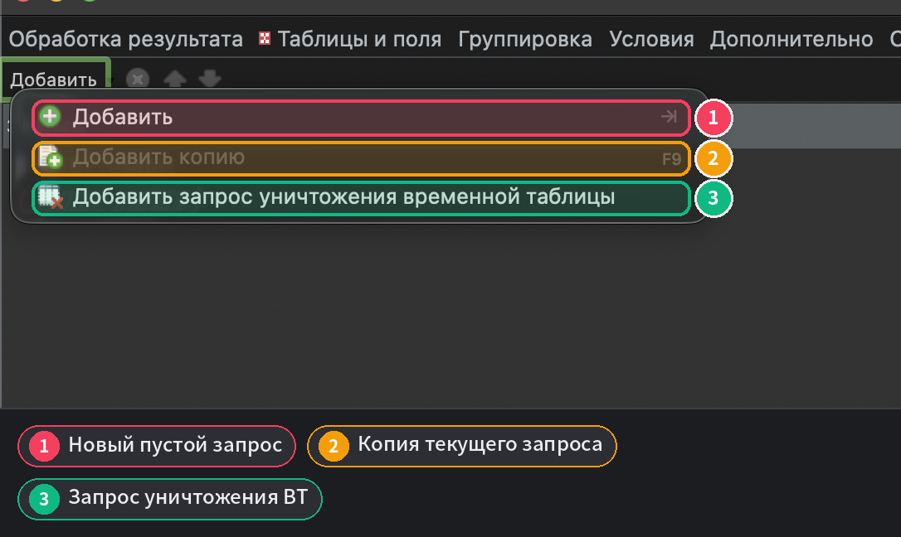
| № | Что это |
|---|---|
| 1 | Новый пустой запрос |
| 2 | Копия текущего запроса — удобно, когда следующий запрос похож на предыдущий |
| 3 | Запрос уничтожения временной таблицы — УНИЧТОЖИТЬ |
Шаг 4. Второй запрос
Внизу в «Редактируемый запрос» выбери второй запрос. На «Таблицах и полях» из «Временных таблиц» перенеси ВТТовары в среднюю колонку, поля — в правую:
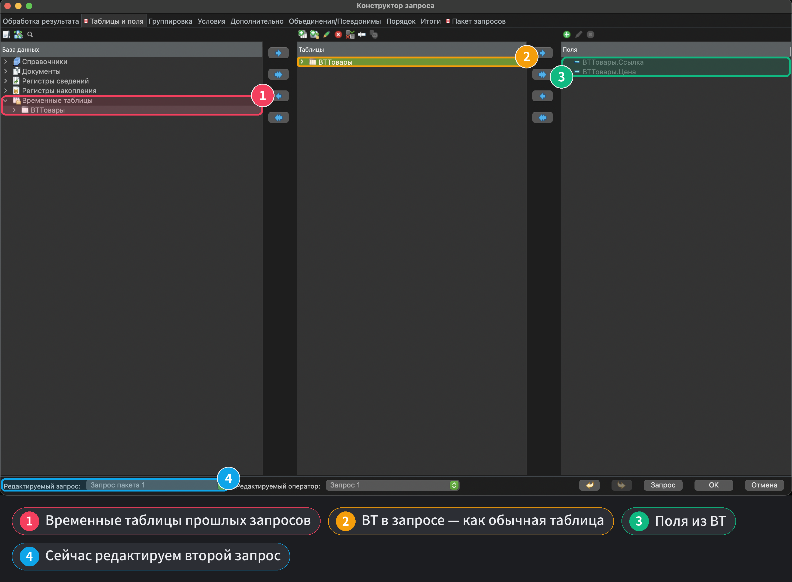
| № | Что это |
|---|---|
| 1 | Раздел «Временные таблицы» — в нём таблицы, созданные запросами выше |
| 2 | Временная таблица в запросе — работает как обычная таблица |
| 3 | Поля из временной таблицы |
| 4 | «Редактируемый запрос» — сейчас открыт второй запрос пакета |
Шаг 5. Текст и код
Кнопка «Запрос»:
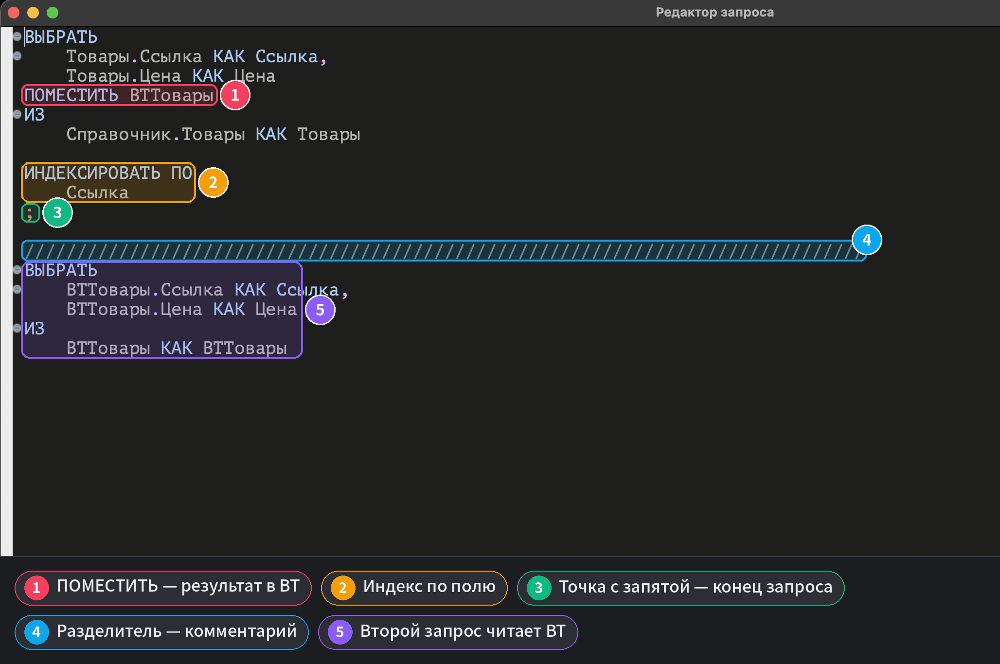
| № | Что это |
|---|---|
| 1 | ПОМЕСТИТЬ — результат запроса сохраняется во временную таблицу |
| 2 | ИНДЕКСИРОВАТЬ ПО — индекс с вкладки «Индекс» |
| 3 | ; — конец первого запроса |
| 4 | Разделитель — просто комментарий |
| 5 | Второй запрос читает временную таблицу |
После «ОК» в коде:
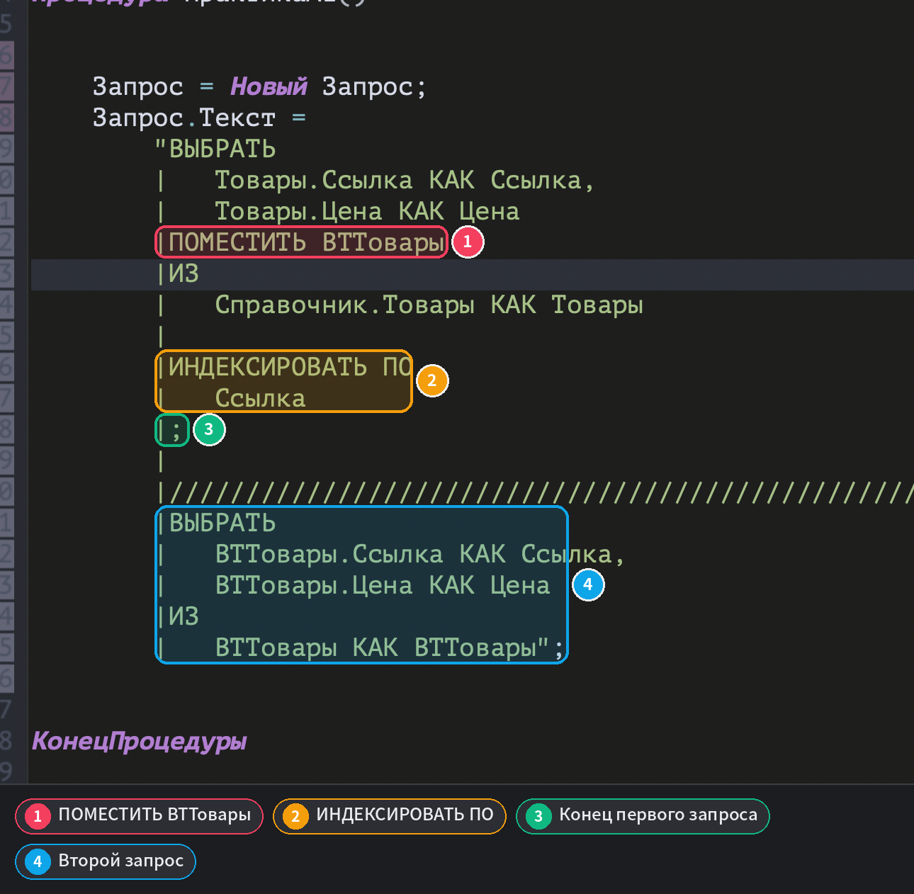
| № | Что это |
|---|---|
| 1 | ПОМЕСТИТЬ ВТТовары |
| 2 | ИНДЕКСИРОВАТЬ ПО |
| 3 | Точка с запятой — в коде тоже с вертикальной чертой, это часть одной строки текста |
| 4 | Второй запрос |
7. Пример: приходы за период через временную таблицу
Задача: товары, которые приходили за период, с количеством и текущей ценой из справочника.
Запрос = Новый Запрос;
Запрос.Текст =
"ВЫБРАТЬ
| ПриходТовараТовары.Товар КАК Товар,
| СУММА(ПриходТовараТовары.Количество) КАК Количество
|ПОМЕСТИТЬ ВТПриходы
|ИЗ
| Документ.ПриходТовара.Товары КАК ПриходТовараТовары
|ГДЕ
| ПриходТовараТовары.Ссылка.Дата МЕЖДУ &Начало И &Конец
| И ПриходТовараТовары.Ссылка.Проведен
|СГРУППИРОВАТЬ ПО
| ПриходТовараТовары.Товар
|
|ИНДЕКСИРОВАТЬ ПО
| Товар
|;
|
|////////////////////////////////////////////////////////////////////////////////
|ВЫБРАТЬ
| ВТПриходы.Товар КАК Товар,
| ВТПриходы.Количество КАК Количество,
| Товары.Цена КАК Цена
|ИЗ
| ВТПриходы КАК ВТПриходы
| ВНУТРЕННЕЕ СОЕДИНЕНИЕ Справочник.Товары КАК Товары
| ПО ВТПриходы.Товар = Товары.Ссылка";
Запрос.УстановитьПараметр("Начало", НачалоДня(Дата(2026, 10, 1)));
Запрос.УстановитьПараметр("Конец", КонецДня(Дата(2026, 10, 31)));
Выборка = Запрос.Выполнить().Выбрать(); // результат второго запроса
| Шаг | Что делает |
|---|---|
| Первый запрос | Собирает приходы за период и сворачивает по товару. Результат — в ВТПриходы, с индексом по товару |
| Второй запрос | Берёт готовую маленькую таблицу и присоединяет к ней справочник |
Выполнить() |
Выполняет оба, возвращает результат второго |
Временная таблица как условие виртуальной таблицы
Частый приём в типовых: отобрать нужные элементы во временную таблицу и передать её в условие виртуальной таблицы регистра через вложенный запрос:
РегистрНакопления.ОстаткиТоваров.Остатки(
&Дата,
Товар В (ВЫБРАТЬ ВТ.Товар ИЗ ВТПриходы КАК ВТ)) КАК Остатки
Платформа посчитает остатки только по товарам из временной таблицы — быстро, даже если в базе тысячи товаров.
8. Ловушки
- Забыть
;между запросами. Ошибка синтаксиса — платформа не поймёт, где кончается один запрос. Выполнить()возвращает только последний результат. Нужны результаты нескольких запросов —ВыполнитьПакет().- Временная таблица не видна в другом объекте
Запрос. Без общего менеджера временных таблиц каждый запрос видит только свои ВТ. - Повторный
ПОМЕСТИТЬс тем же именем в одном менеджере — «Таблица уже существует». СначалаУНИЧТОЖИТЬ. - Индекс не по тому полю. Индексируй поле, по которому соединяешь или отбираешь, а не первое попавшееся.
- Временные таблицы в цикле. Создавать ВТ в цикле — это тот же запрос в цикле, только хуже. Задача 3.6.
9. Практика А (30–60 минут)
А1. Пакет из двух запросов
Процедура &НаСервере в области Задания Песочницы.
- Первый запрос: товары справочника с ценой больше 1000 — во временную таблицу
ВТДорогиес индексом по ссылке. - Второй запрос: остатки этих товаров на конец сегодняшнего дня — соедини временную таблицу с остатками.
- Выполни через
Выполнить()и выведи результат. - Выполни через
ВыполнитьПакет(). В отладчике посмотри массив результатов: сколько в нём элементов и что лежит в первом? Ответ — комментарием в коде.
Подсказки:
- Где в тексте стоит
ПОМЕСТИТЬ? - Остатки на сегодня — какая виртуальная таблица и какой параметр?
- Нужны ли дорогие товары без остатка? От этого зависит вид соединения.
- В первом элементе массива — результат запроса с
ПОМЕСТИТЬ. Какое у него поле?
10. Практика Б — проект
Б1. Товары на дату — через пакетный запрос
Что делает функция: для каждого товара показывает, сколько его осталось на конец указанного дня, по какой цене он продавался в этот день и на какую сумму его лежит на складе.
Где: модуль менеджера справочника «Товары», область ПрограммныйИнтерфейс.
Функция: ДанныеНаДатуПакетом(ДатаДанных). Если в модуле уже есть функция ДанныеНаДату с одним запросом — не трогай её, новую сделай рядом. Потом сравнишь результаты.
| Параметр | Тип | Что это |
|---|---|---|
ДатаДанных |
Дата | День, на конец которого нужны данные |
Возвращает таблицу значений:
| Колонка | Тип | Что это |
|---|---|---|
Товар |
СправочникСсылка.Товары | Товар |
Остаток |
Число | Остаток на конец дня. Нет остатка — 0 |
Цена |
Число | Цена из регистра «ЦеныТоваров», действовавшая на эту дату. Нет цены — 0 |
Стоимость |
Число | Остаток × Цена |
Требования:
- в результате все товары справочника без пометки удаления — даже без остатка и без цены;
- остаток — из регистра накопления «ОстаткиТоваров», на конец дня;
- цена — из регистра сведений «ЦеныТоваров», последняя на эту дату;
- сортировка по стоимости, от большей к меньшей;
- запрос — пакет из четырёх запросов, а не один большой.
Из чего состоит пакет:
| № | Запрос | Что делает |
|---|---|---|
| 1 | ВТТовары |
Отбирает товары без пометки удаления. Индекс по ссылке |
| 2 | ВТОстатки |
Остатки на конец дня — только по товарам из ВТТовары, отбор в условии виртуальной таблицы |
| 3 | ВТЦены |
Цены на дату — только по товарам из ВТТовары, отбор в условии виртуальной таблицы |
| 4 | Итоговый | Берёт ВТТовары и присоединяет к ней остатки и цены. Даёт результат функции |
Проверка на данных: на 15.10.2026 должно получиться:
| Товар | Остаток | Цена | Стоимость |
|---|---|---|---|
| Ноутбук | 5 | 60 000 | 300 000 |
| Мышь | 22 | 550 | 12 100 |
| Остальные товары | 0 | их цена или 0 | 0 |
Если в модуле есть ДанныеНаДату с одним запросом — вызови обе на одну дату и сравни: результаты должны совпасть строка в строку.
Б2. Цены во временную таблицу через менеджер
В модуле менеджера регистра сведений ЦеныТоваров процедура ПоместитьЦеныНаДату(МенеджерВТ, Дата). Она создаёт временную таблицу ВТЦены с полями Товар, Цена в переданном менеджере и ничего не возвращает.
В Песочнице:
- Создай менеджер временных таблиц.
- Вызови
ПоместитьЦеныНаДату. - Отдельным запросом с тем же менеджером выбери из
ВТЦенытовары дороже 1000. - Закрой менеджер.
Подсказки:
- Что нужно присвоить запросу внутри процедуры, чтобы ВТ попала в переданный менеджер?
- Почему процедура, а не функция?
- Чем такой подход удобнее, чем каждый раз писать срез цен заново?
Коммит: Задача 3.4: временные таблицы, пакетные запросы, менеджер ВТ.
11. Справочник
Ключевые слова
| Слово | Что делает |
|---|---|
ПОМЕСТИТЬ Имя |
Сохранить результат запроса во временную таблицу |
ИНДЕКСИРОВАТЬ ПО Поле |
Построить индекс временной таблицы |
; |
Конец запроса в пакете |
УНИЧТОЖИТЬ Имя |
Удалить временную таблицу |
Методы и объекты
| Что | Для чего |
|---|---|
Запрос.Выполнить() |
Выполнить весь пакет, вернуть результат последнего запроса |
Запрос.ВыполнитьПакет() |
Выполнить весь пакет, вернуть массив результатов всех запросов |
Новый МенеджерВременныхТаблиц |
Контейнер для временных таблиц между запросами |
Запрос.МенеджерВременныхТаблиц = МВТ |
Подключить менеджер к запросу |
МВТ.Закрыть() |
Удалить все ВТ менеджера и освободить память |
Сравнение с SQL
| 1С | SQL |
|---|---|
ПОМЕСТИТЬ ВТ |
SELECT ... INTO #ВТ |
УНИЧТОЖИТЬ ВТ |
DROP TABLE #ВТ |
ИНДЕКСИРОВАТЬ ПО |
CREATE INDEX |
Проверь себя
| Вопрос | Ответ |
|---|---|
Что делает ПОМЕСТИТЬ и где оно стоит? |
Сохраняет результат в ВТ. Между полями и ИЗ |
Что вернёт Выполнить() для пакета из трёх запросов? |
Результат третьего |
Что вернёт ВыполнитьПакет()? |
Массив результатов, по одному на запрос |
Увидит ли новый Запрос временную таблицу старого? |
Только если у них общий менеджер временных таблиц |
| Когда индекс полезен? | Когда по полю соединяешь или отбираешь, а строк много |
Зачем УНИЧТОЖИТЬ? |
Освободить память или пересоздать ВТ с тем же именем |